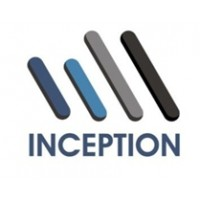

Strucna Pomoć:
- Izrada Pravilnika o kancelarijskom i arhivskom poslovanju
- Izrada liste kategorija registraturskog materijala sa rokovima čuvanja
- Delovodnik, arhivska knjiga, popisi akata, skraćeni delovodnik, interna dostavna knjiga itd.

(Ekskluzivni zastupnik Kompanije "Inception")

Fizičko sredjivanje dokumentacije predstavlja prvi korak u standardizaciji i modernizaciji poslovanja sa dokumentacijom.
Prema Zakonu o kulturnim dobrima, pravna lica su dužna da u cilju upravljanja dokumentacijom tokom svog poslovanja:
Izlučivanje podrazumeva idvajanje registraturskog materijala kojem je zakonski rok čuvanja istekao (bezvredni registraturski materijal) od one dokumentacije koja se čuva trajno (arhivska građa) ili kojoj još uvek nije istekao rok čuvanja (dokumentacija koja se još ne može uništiti).
Izlučivanjem registraturskog materijala se uspostavlja ažurost u rukovanju dokumetacijom.
Odabiranje arhivske gradje i Izlučivanje bezvrednog registraturskog materijala obavlja se na osnovu liste kategorija registraturskog materijala sa rokovima čuvanja. Međutim, samo iz sredjene i adekvatno popisane dokumentacije se može razdvojiti arhivska gradja od bezvrednog registraturskog materijala

Za izdavanje arhivske gradje i izlučivanja bezvrednog registraturskog materijala obrazuje se posebna komisija u entitetu. Komisija popisuje bezvredni registraturski materijal saglasno utvrdjenoj listi sa rokovima čuvanja i predlaže ga za izlučivanje.
Popis bezvrednog registraturskog materijala dostavlja se nadležnom arhivu sa zahtevom da se materijal pregleda i odobri izlučivanje. Isključivo na osnovu pismene saglasnosti, odnosno rešenja nadležnog arhiva bezvredni registraturski materijal se uništava ili daje u preradu kao sekundarna sirovina - stara hartija.
Na sređivanju dokumentacije radi stručna ekipa arhivskih radnika.
Sam proces fizičkog sređivanja dokumentacije sprovodi se do nivoa arhivske jedinice (registrator, svežanj, fascikla, dosije, kutija...).
Sređivanje podrazumeva verifikaciju unutrašnjeg sadržaja arhivske jedinice.
U nadi da ćemo ostvariti saradnju, srdačno Vas pozdravljamo.